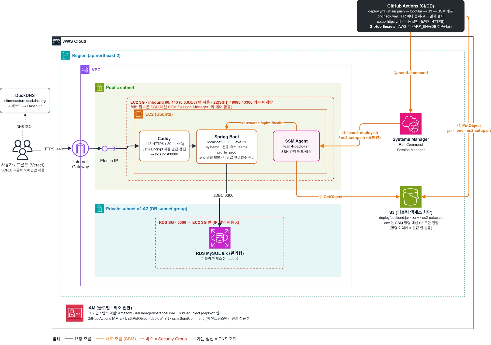

CMC 11th Hackathon Team 4 | Backend
집안일을 나누는 서비스의 AWS 인프라를 구성하고, API 서버에서 Swagger 에러 문서 자동화, QA 결함 수정, 문서·코드 일치 검사를 맡았습니다.
- 기간
- 2026년 11월 21일 – 22일 (해커톤)
- 역할
- 백엔드, AWS 인프라
- 주요 기술
- Java 21
- Spring Boot 4.1.3
- Spring Data JPA
- MySQL
- Redis
- springdoc-openapi
- GitHub Actions
- AWS EC2·RDS·S3·Systems Manager
- Caddy
프로젝트 소개
CMC 11기 해커톤 4조의 백엔드입니다. 집안일을 나누고, 덜어 주고, 고마움을 하트로 전하는 서비스의 API 서버로, 집·구성원·집안일·결산 기간·배분·주고받기·알림을 다룹니다.
내가 담당한 부분
- AWS 인프라: VPC·서브넷·보안 그룹, EC2·RDS·S3, Caddy HTTPS, SSM 기반 배포, 최소 권한 IAM.
- API 문서: Swagger 에러 응답 자동 생성, 에러 코드 표, 요청 예시, 정수 enum 표기 수정.
- 기능·결함 수정: 덜어가기 되돌리기 알림 결함과 에러 메시지 정정, 생성 API 201 응답.
- 구조·문서: 도메인 → 계층 패키지 분리와 Converter 도입,
docs/·ADR 정리, PR마다 문서·코드 일치 검사. - 환경·배포 초기 설정: 운영 DB 자동 생성, 로컬
.env설정, Redis 추가, CORS 허용 출처 제한, 배포 확인용 임시 API. - 테스트: 주요 서비스 회귀 테스트 보강.
AWS 인프라 구성

원본 크기로 보기(새 탭에서 열림)- 요청 흐름
사용자·프론트(Vercel) → DuckDNS(
niturnnaeturn.duckdns.org, A 레코드 → Elastic IP) → Internet Gateway → 퍼블릭 서브넷의 EC2(Ubuntu). EC2에서는 Caddy가 443 HTTPS를 받아(80 → 443) Let’s Encrypt 인증서를 자동으로 발급·갱신하고localhost:8080의 Spring Boot로 넘깁니다. Spring Boot는 systemd 전용 유저team4로prod프로필로 실행하고, 비밀값은 권한 600인.env에서 환경변수로 주입합니다. DB는 프라이빗 서브넷 두 개 AZ에 걸친 DB 서브넷 그룹의 RDS MySQL 8.x(퍼블릭 액세스 없음, 커넥션 풀 5)입니다.- 배포 흐름
① GitHub Actions가 jar·
.env·ec2-setup.sh를 S3에 올리고 → ② Systems Manager에send-command를 보내면 → ③ EC2의 SSM Agent가team4-deploy.sh를 실행해 → ④ S3에서 파일을 받아 → ⑤ 서비스를 재시작하고/api/v1/health로 확인합니다..env는 SSM 명령이 아니라 S3로만 전달해 명령 이력에 비밀값이 남지 않게 했습니다. 워크플로는deploy.yml(main push 배포),pr-check.yml(PR마다 문서·코드 일치 검사),setup-https.yml(수동 실행, 도메인 HTTPS 설정) 세 개입니다.- 보안
EC2 보안 그룹은 80·443만 열고 22(SSH)·8080·3306은 외부에 열지 않았습니다. 서버 접속은 SSH 대신 SSM Session Manager로만 하므로 키 페어가 없습니다. RDS 보안 그룹은 3306을 EC2 보안 그룹에서 오는 요청만 받고 IP 대역으로는 허용하지 않습니다. S3는 퍼블릭 액세스를 차단했습니다.
- IAM
최소 권한으로 나눴습니다. EC2 인스턴스 역할은
AmazonSSMManagedInstanceCore와deploy/*에 대한s3:GetObject만, GitHub Actions용 IAM 유저는deploy/*에 대한s3:PutObject와 이 인스턴스에 대한ssm:SendCommand만 가지며 콘솔 접근은 없습니다.
문서: architecture.md(새 탭에서 열림) · deploy.md(새 탭에서 열림) · ADR(새 탭에서 열림)
Swagger 에러 응답 자동화
- 과제
12개
XxxApiDocs에 4xx 응답을 손으로 적고 있었습니다(108줄, 에러 코드 155개). 에러 응답 스키마도 성공 DTO로 잘못 표시됐습니다.- 구현
@ApiErrorCodes에ErrorCode를 나열하면 HTTP 상태별 응답과 코드별 실제 응답 예시 JSON을 만들고,@ApiErrorCase로 그 API에서만의 발생 상황을 덧붙이게 했습니다. 요청 본문이나@CurrentUser가 있으면 공통 에러를 자동으로 추가하고, Swagger 첫 화면에는ErrorCode전체 표를 enum에서 생성했습니다.- 결과
기존 코드 155개를 생성된
/v3/api-docs와 대조해 누락 0, 잘못된 에러 스키마 0을 확인했습니다. 이후 에러 코드 표를 HTTP·code·message 순서로 정리하고 라이트·다크 스타일을 적용했습니다.
PR: #23 Swagger 에러 응답 자동화(새 탭에서 열림) · #44 에러 코드 표 스타일 개선(새 탭에서 열림)
정수 enum이 문자열로 표시되던 문제
swagger-core는 @Schema(allowableValues)를 항상 문자열로 넘겨서, 정수 필드 settlementCycle의 enum이 ["1","3","7"]로 보였습니다. 서버는 문자열 "3"을 400으로 거부하므로 문서를 보고 호출하면 실패할 수 있었습니다. 문서 생성 시 정수 스키마의 enum을 숫자로 바꾸는 IntegerEnumOpenApiCustomizer를 추가해 [1, 3, 7]로 고쳤습니다.
PR: #52 Swagger 정수 필드 enum 을 숫자로 표시(새 탭에서 열림)
덜어가기 되돌리기 알림 결함 수정
- 과제
운영 API QA에서 덜어간 사람이 되돌려도 원래 담당자에게 "덜어갔어요" 알림이 안 읽음으로 남고, 그 알림에 하트를 누르면 항상
TRANSFER-409가 나는 결함을 찾았습니다. 여러 상황에서 "내가 받은 요청이 아닙니다." 같은 맞지 않는 에러 메시지도 나왔습니다.- 구현
되돌리기(
DELETE /transfers/{id}) 때 해당 transfer의CHORE_RELIEVED알림을 읽음 처리했습니다. 에러 코드는 그대로 두고 메시지 6개를 상황에 맞게 고쳤고, 기간 연장 일수(1·3·7) 검사는 DTO에서 서비스로 옮겨 메시지에 필드명이 제대로 나오게 했습니다.- 결과
되돌리기 테스트에 "안 읽은
CHORE_RELIEVED없음" 단언을 추가해 수정 전 코드에서는 실패, 수정 후에는 통과하는 것을 확인했습니다.
PR: #26 덜어가기 되돌리기 시 덜어감 알림 읽음 처리 및 에러 메시지 정정(새 탭에서 열림)
문서·코드 일치 검사 자동화
- 과제
README 하나에 런북이 몰려 있었고, 환경변수·포트·워크플로가 바뀌어도 문서가 따라 바뀌는지 확인할 방법이 없었습니다.
- 구현
문서를
docs/(로컬 개발·배포·아키텍처)와 ADR 0001~0008로 나누고, 환경변수·포트·워크플로·링크가 문서와 맞는지 검사하는scripts/check-docs.sh를 만들었습니다. 이 스크립트를main대상 PR마다 실행하는 워크플로를 추가했습니다(배포·AWS 권한 없음). 같은 PR에서 도메인 내부를 계층 패키지로 나누고 DTO↔Entity 변환을XxxConverter로 분리했습니다(동작 변화 없음).- 결과
워크플로를 추가하고 문서에 안 적으면 검사가 실패하고, 문서를 반영하면 통과하는 것을 확인했습니다. 빌드·테스트는 아직 PR 검사에 넣지 않았습니다.
PR: #12 문서 정비(docs/·ADR), 도메인 계층 패키지와 Converter 도입(새 탭에서 열림) · #22 PR 마다 문서·코드 일치 검사(check-docs.sh)를 자동 실행(새 탭에서 열림)
API 응답 코드와 요청 예시
- 과제
새 리소스를 만드는 POST도 200을 돌려줬고, Swagger 예시만으로 호출할 수 있는 API가 47개 중 34개였습니다.
- 구현
매번 새 리소스를 만들고 id를 돌려주는 POST 5개에 201을 적용하고, 참여·배분·시작 같은 동작형 API는 200으로 두었습니다. 13개 요청 DTO의 모든 필드에
@Schema(example)을 달았습니다.- 결과
Swagger 예시만으로 호출할 수 있는 API가 34/47(72%)에서 47/47(100%)이 됐습니다. 응답 코드가 바뀌는 5개 API는 프론트 영향(
status === 200직접 비교 시 수정 필요)을 PR에 적었습니다.
PR: #39 생성 API 201 응답, 요청 DTO Swagger 예시 추가(새 탭에서 열림)
환경·배포 초기 설정
- 운영 DB 자동 생성: RDS를 초기 DB 이름 없이 만들어 첫 배포 때 DB가 없었기 때문에, 접속 URL에
createDatabaseIfNotExist=true를 넣었습니다. - 로컬 설정:
application-local.yml이 루트의.env를 읽게 하고, 없으면 기존 기본값을 쓰게 했습니다. - Redis: 로컬은 docker-compose(호스트 포트 6380), 운영은 EC2 설치 스크립트에 추가하고
localhost:6379에만 바인딩해 외부에서 접근할 수 없게 했습니다. - CORS:
allowCredentials(true)와*조합을 프론트 운영·프리뷰·로컬 주소만 허용하도록 바꾸고, 다른 출처는 403이 나는 것을 확인했습니다. - 배포 확인용 임시 API: DB·Redis 연결을 확인하는
[TEST]CRUD API를 만들었습니다.
PR: #5 운영 DB 자동 생성(새 탭에서 열림) · #6 로컬 DB 설정을 .env 에서 읽도록 변경(새 탭에서 열림) · #8 Redis 추가(새 탭에서 열림) · #10 CORS 허용 출처 제한(새 탭에서 열림) · #7 배포·DB 확인용 임시 CRUD API(새 탭에서 열림)
회귀 테스트
집 구성원 내보내기 권한, 집 상태별 기간 조회, 배분 중 집안일 추가 제한, 덜어가기 취소와 알림, 기간 자동 종료·이월, 프로필 부분 수정과 SSE 재연결에 대한 서비스 테스트를 보강했습니다. H2 테스트 136개가 통과했고 JaCoCo 라인 커버리지 85.34%, 분기 커버리지 81.47%였습니다.
PR: #43 주요 서비스 회귀 테스트 보강(새 탭에서 열림)
남은 과제
- PR 검사: 문서 검사에 빌드·테스트(
./gradlew build) 추가. - 알림 표시: 읽은 알림 목록에서 되돌린 덜어가기 알림이
hearted:false로 보이는 부분은hearted의미를 바꿔야 해 이번엔 제외.